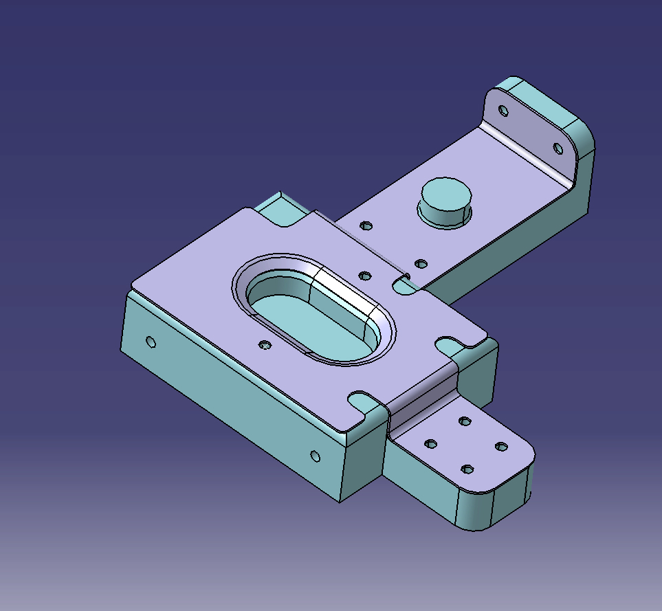

In this project, I created a sheet metal cover in CATIA V5, using the Generative Sheet Metal Design workbench. The project required a deep understanding of metal forming techniques, with the use of bending, cutting, and extruding operations to create complex but manufacturable sheet metal parts. The design began with the creation of a base wall using the Wall feature, which provided a foundational sheet from which the entire component was developed. The use of bending features was critical for forming the flanges and other folded sections of the part, ensuring the model’s manufacturability with minimal stress on the material during real-world production. Finally, the part could be unfolded and flattened using CATIA’s unfold function, verifying that the design could be produced from a single sheet of metal.
